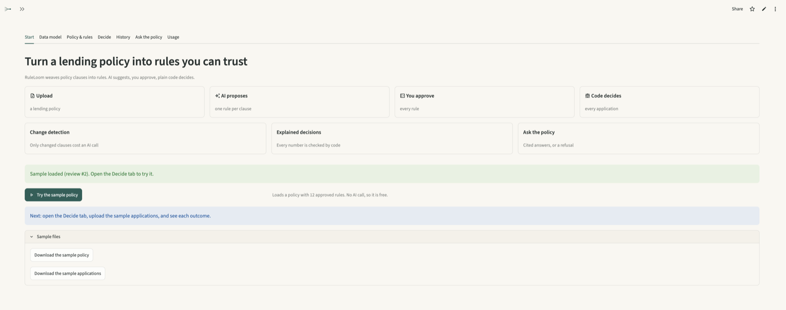
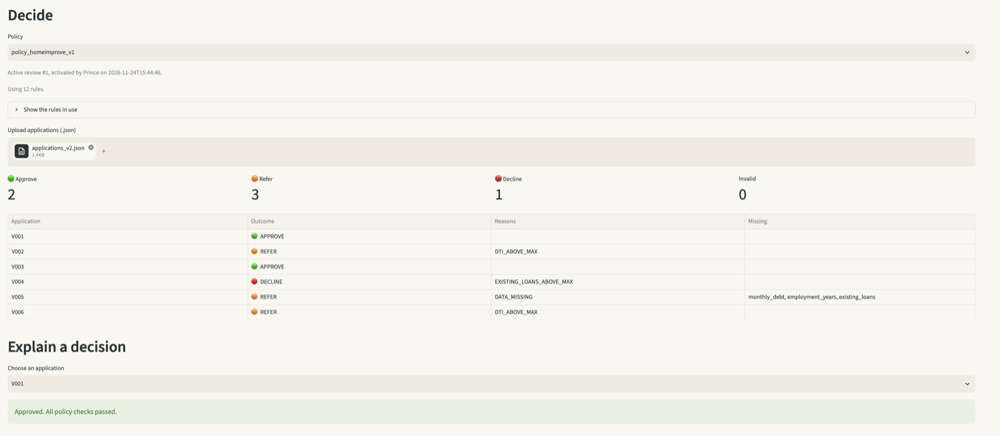
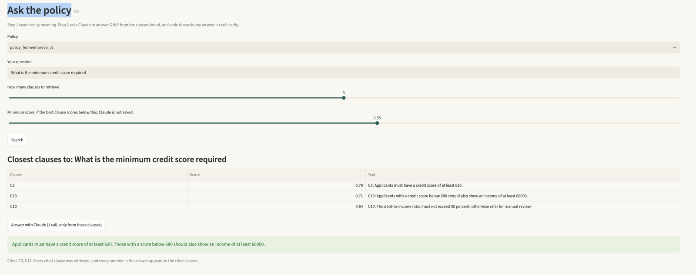

RuleLoom: AI-assisted policy-to-rules workbench
Upload a lending policy; Claude proposes one rule per clause; a named reviewer approves; plain code decides every application. Built as a personal prototype to show how AI can speed up policy-to-rules work without giving up control.
- Rules: one schema-validated rule per clause, with nothing pre-approved and every change versioned.
- Decisions: approved rules are applied by plain code, returning APPROVE, REFER or DECLINE with reason codes.
- Q&A and change detection: Voyage AI embeddings find the right clauses; answers cite them or decline.
The demo is passcode-protected to control API cost. Email me for the passcode. The app's Start tab loads a sample policy with no AI call. The first load may take a moment while the free host wakes up.



How it works, and what it does in full
What it does today
- Splits a policy into clauses and proposes one rule per clause, validated against a strict schema.
- Detects what changed when a new policy version is uploaded, and calls the model only for changed or new clauses.
- Requires a named reviewer to approve or reject; nothing is pre-approved on a first review.
- Keeps an append-only history of reviews, reviewers and activations.
- Applies active rules to uploaded applications and returns a decision with reason codes. Missing data refers to a person instead of guessing.
- Answers policy questions using embedding retrieval, grounded in the retrieved clauses with citations, and refuses when evidence is weak.
- Tracks token usage and cost per call type.
Why it exists
Turning written credit policy into executable rules is slow and open to interpretation gaps between policy and build teams. This explores how AI can speed up the first draft without taking away control or auditability.
Design principle
AI never makes the decision. It drafts rules from policy text; people approve them; deterministic code applies them. Every review is versioned, and activation is a separate, recorded step.